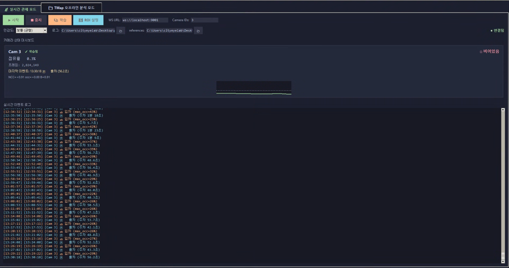
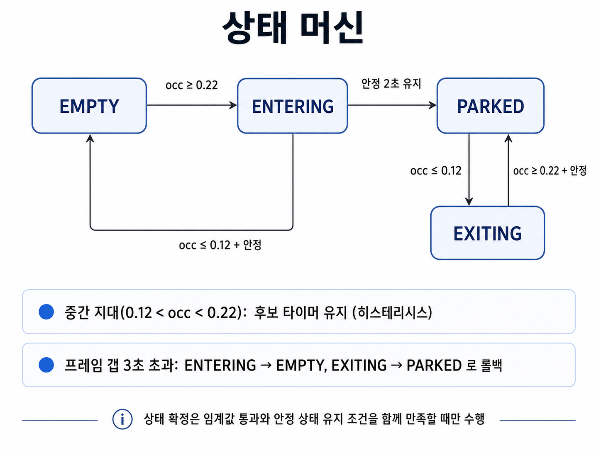

입력과 분석 01
실시간과 녹화 분석에 같은 검출기 사용
실시간 온도맵과 녹화 파일의 프레임에 같은 일반 주차 검출기를 적용합니다. 녹화 데이터의 시각을 사용해 점수와 상태 전이를 다시 확인할 수 있습니다.
목적문제가 나타난 구간을 반복 분석하고 변경 영향을 비교
백엔드 개발 포트폴리오 · Thermal Parking
열화상 데이터로 주차면의 입차·출차를 감지하고 기록하는 시스템입니다. 판정이 흔들리는 원인을 분석하며 기준선과 상태 관리 방식을 수정했고, 실시간 감지와 녹화 데이터 분석을 parking_v8에 통합했습니다.
01
프로젝트 개요
바닥에서 천장을 향해 설치한 열화상 카메라는 빈 주차면에서 천장 패턴을, 차량이 들어오면 차체 하부를 관측합니다. 이 차이를 이용해 주차 상태와 입출차 시점을 판단하고, 관제 화면과 로그에 전달합니다.
직접 맡은 일 — 주차 판정 아이디어를 제안하고 적용할 수 있는 알고리즘을 탐색했습니다. 결과물을 실제 카메라로 확인하고, 현장 설치 후 나타나는 문제를 관찰해 다음 수정의 요구사항과 프롬프트로 구체화했습니다.
AI와의 협업 — 알고리즘 계산과 코드 구현·개선을 AI와 함께 진행했습니다. 아이디어 제안 → AI와 방법 검토·구현 → 실제 주차 동작 확인 → 현장 문제 피드백을 반복하며 parking_v8까지 개선했습니다. 아래 사례는 그 과정에서 반영된 변경과 확인 가능한 근거를 정리한 것입니다.
WebSocket 실시간 수신
녹화 TMap 파일 읽기
관심 영역(ROI) 선택
기준 패턴·기준선 복원
완만한 온도 기울기 제거
유사도·점유 점수 계산
시간·안정성 조건 확인
입차·출차 후보 관리
관제 화면·이벤트 로그
시계열·이벤트 영상

02
처리 구조
프레임 한 장의 계산 결과를 곧바로 이벤트로 저장하지 않고, 기준 데이터와 관측의 연속성을 확인하는 단계를 두었습니다.
실시간 온도맵과 녹화 파일의 프레임에 같은 일반 주차 검출기를 적용합니다. 녹화 데이터의 시각을 사용해 점수와 상태 전이를 다시 확인할 수 있습니다.
목적문제가 나타난 구간을 반복 분석하고 변경 영향을 비교
기준 패턴, 노이즈 맵, ROI와 해당 ROI에서 측정한 기준선 B를 함께 저장합니다. 영역을 바꾸면 이전 영역의 실측값을 그대로 재사용하지 않습니다.
목적학습·저장·재시작 후에도 같은 조건으로 판정
점유 점수의 중앙값, 후보 경과 시간, 최근 점수의 표준편차를 확인합니다. 일반 주차 검출기는 프레임 간격이 3초를 초과하거나 시각이 역행·중복되면 후보를 취소합니다.
목적관측이 끊긴 시간을 입출차 확정 근거로 사용하지 않음
카메라별 점수·상태 이력과 이벤트 로그를 관리하고, 이벤트 전후 프레임을 영상으로 저장합니다. 오프라인에서는 점수 그래프와 해당 프레임을 함께 살펴봅니다.
목적이벤트 시각에서 실제 장면과 판정 조건을 대조

관측 공백 처리
진입 후보는 EMPTY로, 출차 후보는 PARKED로 돌아갑니다. 평활 버퍼도 비워 공백 이전의 값을 이어서 쓰지 않습니다.
초기 학습은 별도 흐름
차량이 이미 있는 상태에서 시작할 때는 임시 차량 기준선을 사용합니다. 빈 기준선을 확보한 뒤 이 일반 주차 검출기로 전환합니다.
03
버전별 개선 과정
온도 기준, 패턴 비교, 상태 분류를 실험하며 문제를 좁혔습니다. 최종 parking_v8에서는 판정 신호 보정에 더해 기준 데이터의 저장·복원과 자동 학습 절차까지 다뤘습니다.
| 단계·파일 | 해결하려던 문제 | 변경한 접근 |
|---|---|---|
| 초기 온도 차분 | 전체 온도 변화가 차량 진입 신호와 섞임 | 기준 온도보다 높은 픽셀의 비율로 시작하고, 이후 기준 패턴과의 유사도(NCC)를 사용하는 방향으로 확장 |
| v3 · v5 | 빈 상태의 NCC가 ROI마다 달라 고정 임계값 적용이 어려움 | 노이즈 맵으로 기준선 B를 예측하고, B 대비 유사도 하락을 점수로 환산. 오프라인 분석과 실시간 감지에 적용 |
| v4의 분류 실험 | 변화 이벤트마다 상태를 뒤집으면 차량 냉각도 출차로 오인할 수 있음 | 이벤트 이후의 안정 장면을 빈 천장 기준과 비교해 상태를 분류하는 방식 검토 |
| v6 · v7_3 | 실시간 결과를 녹화 구간과 대조하고 화면의 온도 변화를 구분할 필요 | 실시간·오프라인 도구 통합. v7_3에는 표시용 고정 톤을 추가하고 판정 계산과 구분 |
| v8 | NCC 정규화 후에도 공간적인 온도 기울기와 기준선 오차가 남음 | 2차 곡면 제거 후 NCC 계산, 인접 프레임 차분으로 노이즈 추정, 실측 B 우선 적용과 안정된 빈 상태에서 보정 |
| v8 내 후속 개선 | ROI 복원 시 기준선 불일치, 점유 상태에서의 초기 학습, 품질 미달 기준 저장 | ROI별 실측 B 저장·복원, 차량 기준에서 빈 기준으로 전환, 품질 미달 시 자동 재수집 |
CASE 01
원인 분석과 판정 방식 개선
절대 온도에서 패턴 비교로 바꾼 뒤에도 점유 점수가 주기적으로 흔들렸습니다. 평균 온도 변화와 공간 패턴 변화를 나눠 분석한 것이 v8의 변경으로 이어졌습니다.
초기의 온도 차분 방식은 차량 진입뿐 아니라 주변 온도 변화에도 영향을 받았습니다. 이후 평균과 크기를 정규화하는 패턴 유사도인 NCC를 사용했지만, v8 변경 기록에는 빈 구간의 점수가 주기적으로 출렁이는 문제가 남아 있습니다.
진단 도구는 녹화 온도맵의 전체 온도 통계와 점수 시계열을 비교하고, 주파수 분석과 자기상관으로 반복 주기를 살펴보도록 구성했습니다. 변경 기록은 셔터 보정 주기에 동반된 완만한 공간 기울기를 원인으로 지목합니다. 전체에 같은 온도를 더하는 변화는 NCC 정규화로 상쇄되지만, 위치마다 다른 변화는 비교할 패턴 자체를 바꿉니다.
v7_3의 고정 톤은 화면을 비교하기 쉽게 만드는 기능입니다. v8에서는 판정 입력에 보정을 적용하도록 범위를 확장했습니다. 진단 도구에는 원본 NCC, 공간 하이패스, 2차 곡면 제거, 다른 영역과의 차분을 같은 데이터에 적용하는 비교 경로가 있습니다.
최종 코드에는 ROI 안에서 완만한 2차 곡면을 추정해 제거한 뒤 남은 패턴을 비교하는 방식을 반영했습니다. 곡면으로 설명되는 성분을 제거하므로, 차량 신호까지 줄어드는지는 실제 장면과 함께 확인해야 합니다.
완만한 공간 기울기도 패턴 차이로 반영
실시간·오프라인 분석·학습 품질 계산에 적용
v8에는 보정된 패턴으로 판정하는 경로가 구현되어 있습니다. 기존 변경 기록에는 동일 녹화 구간에서 점수의 최대·최소 차이가 0.065 → 0.034로 줄었다고 남아 있습니다.
CASE 02
기준 데이터의 일관성
판정 임계값만 조정하는 데서 나아가, 현재 ROI와 기준선이 같은 조건에서 만들어졌는지를 저장·복원 과정까지 확인했습니다.
패턴이 뚜렷한 영역과 균일한 영역은 같은 노이즈에도 유사도가 다르게 나옵니다. 초기 NCC 방식의 고정 임계값만으로는 이 차이를 다루기 어려워, v3·v5에서는 빈 상태의 예상 유사도를 기준선 B로 두었습니다.
v8 변경 기록에서는 학습 중의 느린 온도 변화가 노이즈 추정에 섞여 B가 낮게 예측되는 문제를 확인할 수 있습니다. 또한 전체 화면에서 측정한 B를 일부 ROI에 적용하거나, ROI를 바꾼 뒤 이전 B를 사용하면 점수의 비교 기준이 달라집니다.
v8에서는 해당 ROI의 학습 구간에서 측정한 평균 NCC를 우선 사용합니다. 실측값이 없을 때 예측값으로 시작하고, 안정된 빈 상태가 유지되는 조건에서 B를 보정합니다. ‘모든 ROI에 보정이 필요 없다’고 가정하기보다 기준선의 출처와 적용 영역을 함께 관리하는 방향으로 바뀌었습니다.
점유 점수 occ = 1 − NCC / B
B는 빈 상태의 기준 유사도입니다. occ는 기준 패턴에서 얼마나 달라졌는지를 나타내는 점수이며, 차량이 차지한 실제 면적 비율은 아닙니다.
인접 프레임 차분으로 노이즈를 추정해 느린 변화의 영향을 줄이고, 판정과 같은 곡면 보정 공간에서 B를 측정합니다.
기준 패턴·노이즈 맵·ROI·ROI별 실측 B를 하나의 NPZ 파일에 저장합니다. 오프라인 분석은 저장된 ROI와 현재 마스크가 일치할 때 해당 B를 재사용합니다.
ROI 변경 시 기존 ROI의 B를 무효화합니다. 실측 B가 없으면 예측값과 온라인 보정을 사용하며, 이전 노이즈 추정 방식의 파일에는 재학습 권장 안내를 표시합니다.
저장된 모델을 다시 여는 경로와 ROI를 변경하는 경로에 기준선 선택·무효화 처리가 구현되어 있습니다. 실시간과 오프라인 분석 모두 현재 영역에 대응하는 실측 B를 전달받을 수 있습니다.
CASE 03
초기 상태와 실패 복구
‘처음부터 빈 주차면을 학습할 수 있다’는 전제를 풀고, 임시 기준의 수명과 교체 실패를 다루는 절차를 추가했습니다.
이미 차량이 주차된 상태에서는 빈 천장 기준을 바로 수집할 수 없습니다. 이 장면을 빈 기준으로 저장하면 이후 판정의 의미가 바뀝니다. 학습 중 장면이 변하는 경우에도 그대로 저장하면 비교 기준의 품질이 떨어집니다.
같은 형태의 온도맵이라도 ‘차량이 있는 임시 기준’과 ‘일반 감지에 사용할 빈 기준’은 용도가 다릅니다. 프레임 수를 채웠다는 사실만으로는 학습 구간이 일관된 장면인지 판단할 수도 없습니다.
v8 내 후속 개선에서는 기준 파일에 역할을 저장하고, 차량 기준을 로드하면 PARKED 상태로 시작하는 별도 검출기를 사용합니다. 임시 기준에서 지속적인 변화가 감지된 뒤 빈 장면을 수집하고, 품질 확인과 저장이 끝나야 일반 검출기로 전환하도록 구성했습니다.
점유 상태로 시작해 지속적인 패턴 변화를 검사합니다.
3분 대기 후 60초 수집합니다. 기존 차량 패턴으로 돌아오면 수집을 취소합니다.
평균 NCC가 품질 기준에 미달하면 구간을 버리고 5초 뒤 재수집합니다.
자동 생성한 빈 기준은 임시 파일에 쓴 뒤 파일 교체 연산으로 반영합니다. 파일 저장에 성공한 후 메모리의 검출기도 교체하며, 저장에 실패하면 기존 흐름을 유지한 채 재학습을 예약합니다. 이 교체 경로에서는 WebSocket 세션을 종료하지 않습니다.
최종 v8 파일에는 차량 기준의 역할 복원, 출차 후 자동 수집, 품질 미달 재시도, 파일 교체 실패 처리와 일반 검출기 전환이 연결되어 있습니다. 초기 상태를 구분하고 다음 단계로 넘어갈 조건을 명시한 것이 구현 결과입니다.